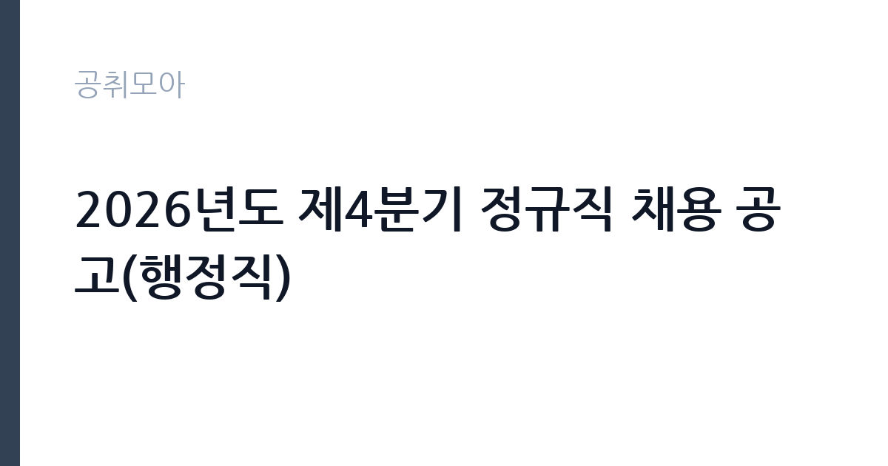

[공공기관] 2026년도 제4분기 정규직 채용 공고(행정직)
한국세라믹기술원 · 경남 · 마감 2026-10-29 (D-15) · 출처 잡알리오

한눈에 보는 모집 조건
| 기관 | 한국세라믹기술원 |
|---|---|
| 공고명 | 2026년도 제4분기 정규직 채용 공고(행정직) |
| 고용형태 | 정규직 |
| 근무지 | 경남 |
| 게시일 | 2026-10-15 |
| 마감일 | 2026-10-29 (D-15) |
지원자격, 이렇게 읽으세요
- 공공기관 채용공시
- 세부 조건은 원문 공고문 확인
지원자격은 기술원 인사규정 제7조의 결격사유와 제20조의 직원정년에 해당하지 않고, 남성은 병역을 필하거나 면제받았으며, 임용 예정일에 즉시 근무가 가능한 자입니다. 채용 분야별 자격과 가점 자격은 공고문에서 따로 정하므로 원문을 확인하시기 바랍니다. 행정직은 행정 관련 전공이나 자격, 공공기관 행정 경력이 평가에 반영되는 경우가 많으니 증빙을 충실히 준비하시기 바랍니다. 블라인드 채용이 적용될 수 있으니 편견 유발 항목 기재에 유의하시기 바랍니다.
이 공고의 포인트
이 공고의 포인트는 정부출연연구기관 정규직 행정 자리라는 점입니다. 연구지원 행정은 과제비 집행과 정산, 시험분석 접수 등 일반 행정과 차별화되는 전문성이 있어 경력 가치가 높습니다. 직원 약 340명 규모의 기관으로, 본원인 경남 진주 근무가 유력하므로 거주 계획을 함께 세우시기 바랍니다. 같은 시기 위촉행정원 채용도 함께 열려 있어, 정규직에 도전하면서 위촉직을 함께 고려하는 전략도 가능합니다.
전형은 어떻게 진행되나
세부 전형 단계는 원문 공고문에서 확인하셔야 합니다. 정규직 채용은 일반적으로 서류전형과 필기전형(NCS 등), 면접으로 진행됩니다. 분야별 자격과 가점 자격을 원문에서 대조하고 증빙을 빠짐없이 준비하시기 바랍니다. 필기가 있다면 NCS 직업기초능력과 전공 과목을 미리 준비하시기 바랍니다. 임용 예정일은 최종합격자 선발 후 협의합니다.
원문에서 확인한 전형 방식
- 기술원 「인사 규정」 제7조(결격사유)에 해당하지 않는 자 - 기술원 「인사 규정」 제20조(직원정년)에 해당하지 않는 자 - 남성의 경우 병역을 필하였거나 면제된 자 - 임용 예정일에 즉시 근무가 가능한 자(임용 예정일은 최종합격자 선발 후 협의할 예정) - 채용 분야별 자격과 가점 자격은 공고문 참고
이런 분께 추천해요
- 연구기관 정규직 행정을 목표로 하는 구직자
- 공공기관 행정 경력과 관련 자격을 갖춘 분
- 진주 본원 근무와 정착이 가능한 분
지원 전 체크리스트
- 결격사유와 정년, 병역 요건을 충족하는지 확인했습니다
- 채용 분야별 자격과 가점 자격을 원문에서 대조했습니다
- 행정 관련 자격과 경력 증빙을 준비했습니다
- 필기전형 과목과 일정을 원문에서 확인했습니다
모집 일정과 제출 타이밍
마감은 10월 29일이며, 정규직은 서류와 필기, 면접으로 전형이 길어 11월에서 12월까지 이어질 수 있습니다. 필기가 있다면 마감 후 바로 대비에 들어가야 하므로 NCS 준비를 미리 시작하시기 바랍니다. 결과 발표는 채용 홈페이지를 통해 단계별로 공지되는 경우가 많으니 수시로 확인하시기 바랍니다.
직무 이해하기: 공공기관
정규직 행정직은 연구과제 관리와 예산 집행, 인사와 총무, 시험분석 접수와 기업지원 민원 응대 등 기관 운영 전반을 맡습니다. 연구기관 행정은 과제비 규정과 정산 절차, 연구보안 관리 등 전문 영역이 있어 배우는 폭이 넓습니다. 장기적으로 행정 전문가로 성장할 수 있는 자리이며, 규정 해석과 집행의 정확성이 핵심 역량입니다.
자기소개서 작성 팁
정규직 행정직 자기소개서는 행정 전문성과 기여 계획을 보여주는 것이 핵심입니다. 행정 경력이 있다면 다뤄본 예산과 문서, 개선 사례를 구체적으로 쓰시기 바랍니다. 연구지원 행정에 관심을 가진 이유를 세라믹기술원의 연구 분야와 연결하면 설득력이 높아집니다. 가점 자격은 증빙과 함께 명확히 기재하고, 블라인드 위반 항목이 들어가지 않게 유의하시기 바랍니다.
면접 준비 포인트
면접에서는 지원 동기와 행정 전문성, 조직관을 묻는 경우가 많습니다. 연구기관 행정의 특성을 이해하고 있다는 점을 보여주시기 바랍니다. 예산 집행 오류나 민원 발생 시 대처 경험을 묻는 질문에는 사례 중심으로 답하시기 바랍니다. 진주 근무와 장기근무 의지를 명확히 밝히시기 바랍니다.
급여·근무조건 읽는 법
정규직 행정직의 정확한 초임은 원문 공고문과 임용 시 호봉 책정에 따라 정해지므로 원문에서 확인하셔야 합니다. 참고 수치로 세라믹기술원의 대졸 초임은 약 3,183만원 수준으로 알려져 있습니다(잡코리아 기업정보 기준, 공식 공시가 아니므로 실제와 다를 수 있습니다). 공공기관 정규직 보수는 통상 호봉제 기본급에 상여와 명절휴가비, 정액급식비, 가족수당 등 수당이 더해지는 구조입니다. 기본급과 수당, 상여를 구분한 정확한 보수표는 임용 안내와 원문에서 확인하시기 바랍니다. 실수령액은 세전 총액에서 4대보험 본인부담금과 소득세를 제외한 금액이 됩니다.
자주 묻는 질문
- 누가 지원할 수 있나요?
결격사유와 정년에 해당하지 않고 남성은 병역필 또는 면제, 임용 예정일 즉시 근무 가능자입니다. 분야별 자격과 가점은 원문에서 확인하시기 바랍니다. - 초임은 어느 정도인가요?
대졸 초임 약 3,183만원 수준으로 알려져 있으나(잡코리아 기업정보 기준, 공식 공시 아님), 실제 초임은 호봉 책정에 따라 달라지므로 원문과 임용 안내에서 확인하시기 바랍니다. - 근무지는 어디인가요?
본원이 경남 진주에 있어 진주 근무가 유력합니다. 정확한 배치 부서와 근무지는 원문 공고문에서 확인하시기 바랍니다.
함께 보면 좋은 공고
[공공기관] 2026년 한국도로공사 교통량 조사 기간제 근로자(사무원) 채용공고 — 마감 2026-10-28[공공기관] 2026년도 제4분기 체험형 인턴 채용 공고(장애인 채용) — 마감 2026-10-29[공공기관] 2026년도 제4분기 체험형 인턴 채용 공고(인턴사무원) — 마감 2026-10-29출처: 잡알리오 공개정보를 바탕으로 공취모아가 정리한 안내글입니다. 모집 조건·일정은 변경될 수 있으니 지원 전 반드시 원문 공고문을 확인하세요. 본 글은 정보 제공용이며 합격을 보장하지 않습니다.